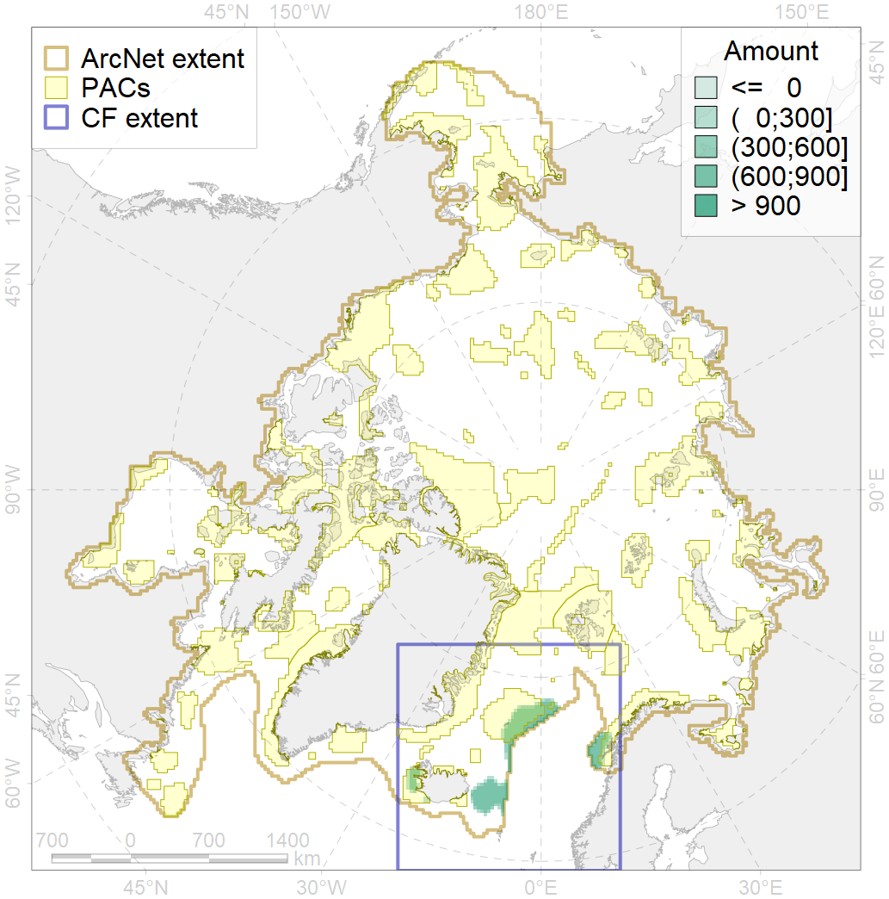
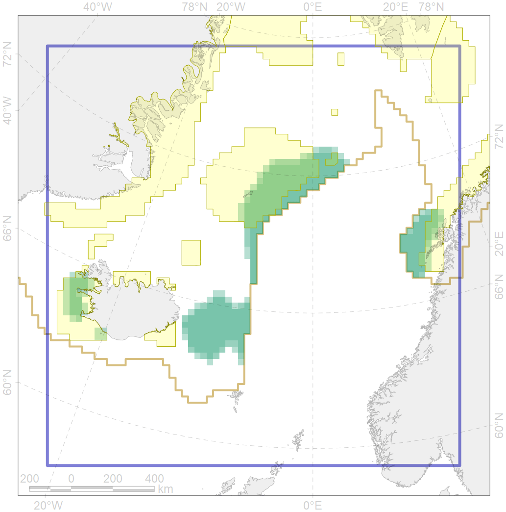

5064

| CF ID | 5064 |
| CF Name | Killer whale summer feeding areas in the North East Atlantic |
| Time Period | 2010-2018 |
| Source(s) | Ovsyanikova cruises 2010, 2011, 2012, 2013, 2015, 2016; Filatova surveys 2017, 2018 |
| Seasonality | June-September |
| Depth Horizon | 0-200 |
| Methodology | Ship surveys, small boat surveys, opportunistic sightings |
| Author Name | Filatova |
| Notes | |
| Conservation Target Set in the Scenario | 0.06 |
| Conservation Target Achieved in the Scenario | 0.359 (Scenario: 598.1%) |
| PAC ID | Proportion in the PAC | Contribution to ArcNet Target Achievement | PAC’s Contribution to the Achieved Target |
|---|---|---|---|
| 27 | 4.5% | 63.3% | 10.6% |
| 34 | 27.1% | 369.6% | 61.8% |
| 35 | 1.2% | 20.2% | 3.4% |
| 38 | 6.5% | 96.2% | 16.1% |
| inner | 39.4% | 549.3% | 91.8% |
| outer | 60.6% | 48.8% | 8.2% |